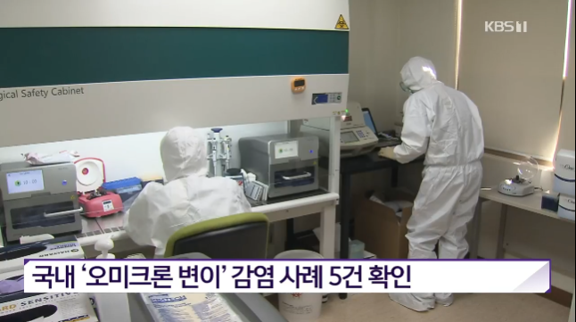
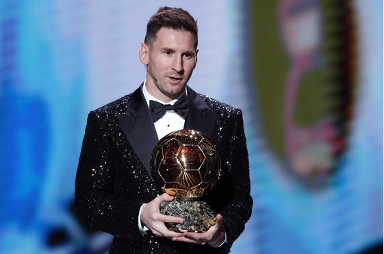
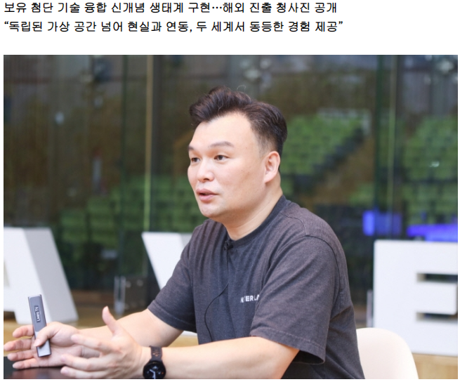

사회
|
|

오미크론 변이 국내 첫 확인...
|
나이지리아에서 귀국한 40대 부부와 지인 등 5명에 대한 유전체 분석 결과, 오미크론 변이로 확인됐습니다.
추가로 4명에 대한 검사 결과는 아직 나오지 않아 오미크론 변이 확진자는 더 늘어날 수 있습니다.'오미크론 변이'에 감염된 사례 5건이 국내에서 처음 확인됐습니다.
인천 거주 40대 부부와 부부 지인인 30대 남성 A씨 등 3명과 해외 입국 확진자인 50대 여성 2명입니다.부부의 10대 아들 1명과 A씨 가족 3명도 코로나19에 감염된 상태인데 분석이 진행 중이며 오미크론 변이 가능성이 높습니다.
이들도 감염이 확인되면 국내 오미크론 감염자는 9명이 됩니다.10대 아들의 결과는 내일, A씨 관련 확진자 3명의 결과는 이르면 4일 나올 예정입니다.
|
스포츠
|
|

통산 7번째 발롱도르를 받은 리오넬 메시
|
리오넬 메시(34, 파리 생제르맹)가 개인 통산 7번째 발롱도르를 수상했다. 메시는 30일(한국시간) 프랑스 파리에서 열린 2021 발롱도르 시상식에서 남자 선수 부문 트로피를 받았다. 프랑스풋볼이 주관하는 발롱도르는 한 해 최고의 활약을 펼친 선수에게 주는 상이다.
메시는 기자단 투표에서 613점을 받아 580점을 받은 바이에른 뮌헨 공격수 로베르트 레반도프스키를 제쳤다. 첼시 미드필더 조르지뉴가 3위, 레알 마드리드 공격수 카림 벤제마가 4위에 자리했다. 맨체스터 유나이티드의 호날두는 6위에 머물렀다. 호날두는 시상식에 불참했다.
|
IT
|
|

석상옥 네이버랩스 대표가 1일 온라인 기자간담회를 열고 '아크버스(ARCVERSE)' 시스템에 대해 설명하고 있다.
|
네이버가 자사 첨단 기술을 융합한 새로운 메타버스 생태계 ‘아크버스(ARCVERSE)’를 선보이고 세계 시장 진출 청사진을 공개했다. 일본 소프트뱅크와 협업한 도시 단위 고정밀 지도(HD맵) 제작을 통해 일본 시장에도 진출한다.
석상옥 네이버랩스 대표는 1일 온라인 기자간담회를 열고 “아크버스는 독립된 가상 공간 대신 현실 세계와 상호 연동되는 디지털 세계를 형성하고 두 세계를 유기적으로 연결해 사용자들에게 공간의 제약 없이 동등한 경험을 제공할 수 있도록 한다는 것이 가장 큰 특징”이라며 “기존 3D 아바타 가상현실 서비스와는 차이가 있다”고 말했다.
|